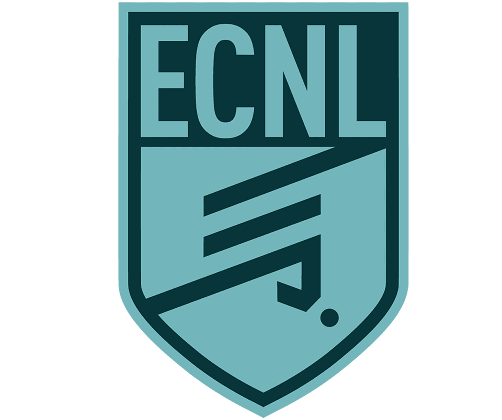
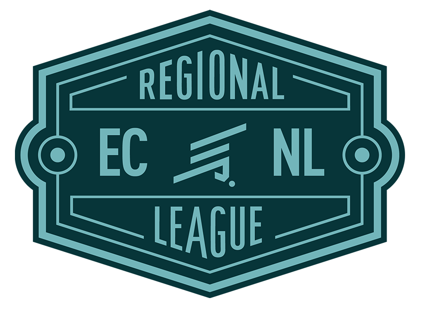
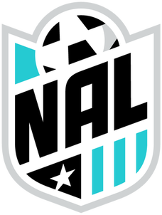
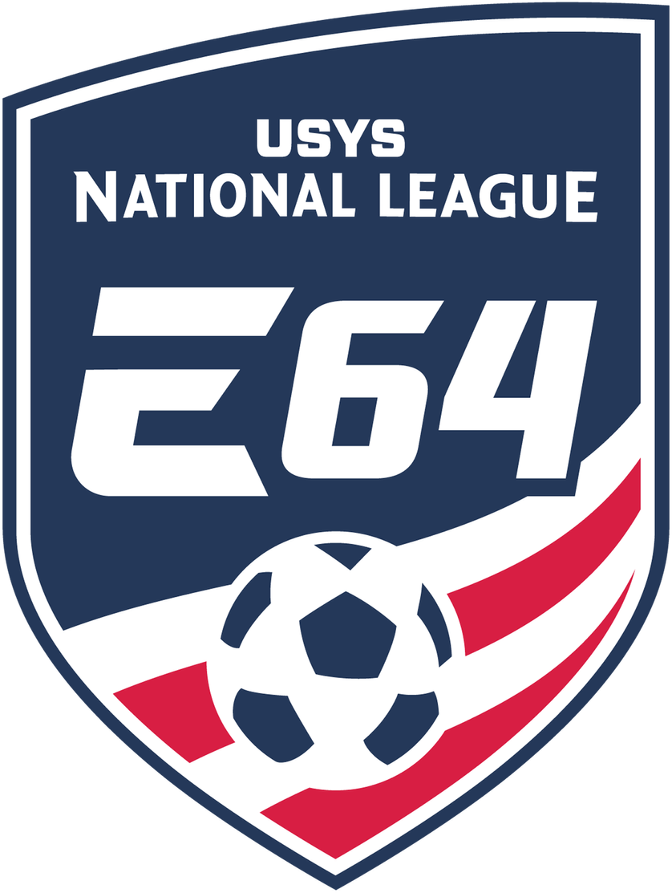
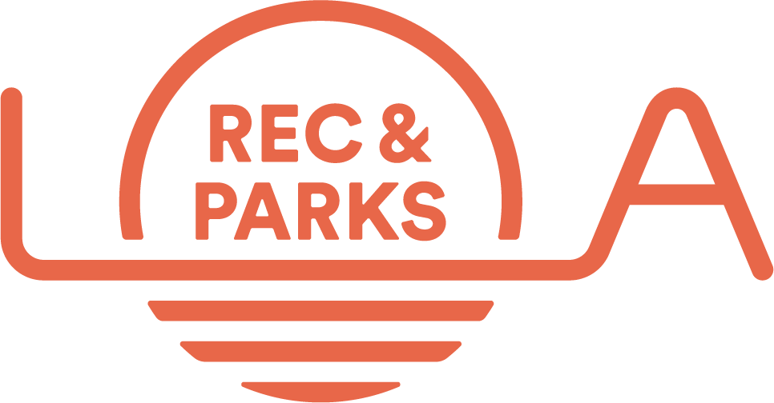

I'm a Southern California soccer parent. When the club bills started arriving, I went looking for what families actually pay — and what they get back — and the numbers didn't exist. So I built them: 5,600+ clubs, 900+ pro salaries, 490 draft picks, and a survey of families like mine. The math doesn't work.
“There is a single, deceitful word separating well-intentioned parents from their money and their time. That word is pathway.”
Every family in this system started the same way mine did: a kid on a rec field, a coach saying he should try out for club. Millions enter at the bottom. The pathway the industry sells runs through five competitive levels and ends at a few hundred professional roster spots.
A club sells two different products: development (coaching, training, competition) and exposure (who actually sees the kid play). Development is broadly comparable across the middle of this pyramid. Exposure is not — MLS NEXT carries the most scout traffic in the system, and leagues at the same level can differ enormously. Fees climb in tiers and exposure climbs in tiers, but they are not the same ladder. The mismatch between what a family pays and who is watching is the gap this report measures.





Recreational players (AYSO + parks). Costs $100–$700/yr.
Competitive club players across 21 tracked leagues, Levels 1–5.
SuperDraft picks per year — the only realistic route into MLS from this pyramid. Most picks never earn an MLS paycheck (see 04).
Every league, level by level, with club and player counts: Youth Scope →
One family in my survey — Elite Academy league, La Mirada, no flights, nothing exotic — added it up: $4,200 in club fees, $1,250 in private coaching, $3,000 in travel, $400 in gear. $8,850 for one year of local soccer. The club's published fee was $4,200. That gap is the rule, not the exception: published fees are the floor, not the price. Tournament fees, uniforms, travel, and separate league fees routinely double the advertised number.
Separate MLS Next competition fee billed after club registration. Community-reported 2025–26.
Mid-estimate career spend for a Tier 4 family over seven years. That buys 3.5 years of in-state tuition or a home downpayment.
Annual travel range at the elite level, the largest and least disclosed variable.
Full cost components, the geography tax, and the LA City United case study: The Real Costs →
The pitch every club parent eventually hears is that the fees are an investment — that a scholarship waits at the end. So I priced the investment: 10-year family cost against expected financial return, at every spending tier. The return is negative at all of them.
| League | Commits | Share |
|---|---|---|
| MLS NEXT | 380 | 51% |
| ECNL Boys | 83 | 11% |
| Other leagues (N1/NPL, Elite 64, USL, SoCal…) | 132 | 18% |
| Club unknown / not in index | 148 | 20% |
n=743 · TopDrawerSoccer commitments, June 2026
| League | Commits | Share |
|---|---|---|
| ECNL Girls | 2,032 | 66% |
| Girls Academy | 529 | 17% |
| Other leagues (ECRL, DPL, NL P.R.O.…) | 189 | 6% |
| League unknown | 329 | 11% |
n=3,079 · SoccerWire commitments, June 2026
| # | Club | League | D1 commits |
|---|---|---|---|
| 1 | Philadelphia Union | MLS NEXT | 13 |
| 2 | Intercontinental Football Academy | Independent academy | 12 |
| 3 | LA Galaxy | MLS NEXT | 11 |
| 4 | Baltimore Armour | MLS NEXT | 11 |
| 5 | San Jose Earthquakes | MLS NEXT | 10 |
| 6 | NYCFC | MLS NEXT | 10 |
| 7 | Sockers FC | MLS NEXT | 10 |
| 8 | Inter Miami CF | MLS NEXT | 10 |
| 9 | Orlando City | MLS NEXT | 9 |
| 10 | Charlotte FC | MLS NEXT | 9 |
Nine of the ten are MLS club programs. A caveat I can't resolve from commitment listings: they don't say whether a player was on the club's free Homegrown academy roster or its pay-to-play Academy Division and pre-academy teams — so how many of these slots were actually free is unknowable from this data. Sources: TopDrawerSoccer (boys) and SoccerWire (girls) commitment listings; league attributed from my 4,576-club index where not listed. Self-reported data — directional, not a census.
Scholarship rate Tier 3 ($7K/yr) needs to break even. Mathematically impossible.
Of D1 men's spots filled by international players who paid €42–€350/yr at home, not $55K.
What the same $54K invested in a 529 plan would be worth at college age.
Of ECNL players estimated to receive a D1 scholarship. Across all club players the rate is far lower.
Of D1 men's scholarship recipients get a full ride. The average award is $34,000/yr, about one year of Tier 3 career cost.
Athletic scholarship money at D3, which has more roster spots than D1 and D2 combined.
Scholarship funnel, draft survival study, and Monte Carlo simulation: The ROI Problem →
MLS, the destination families are paying toward, builds its rosters in the global transfer market, not from the domestic youth pipeline families fund. And for the few kids who make it, the pay rarely covers what their parents spent getting them there.
MLS Pro Academies (30 clubs). Fully funded by MLS clubs. Top players sign Homegrown contracts and skip the draft entirely. By CBA rule, roster spots 29 and 30 on every MLS team are reserved exclusively for Homegrown players.
Independent MLS NEXT clubs (122 clubs). Families fund 5 to 7 years ($25K–$105K total) for draft-only access, competing against players whose development was free. The best academy players never enter that draft pool; it has already been skimmed.
What is a Designated Player? Each MLS club may sign up to three Designated Players (the "Beckham Rule," created in 2007) whose salaries sit outside the league's salary cap. In 2026 there are 73 DPs across 30 clubs, median salary roughly $2.6M. These are the stars families picture when they imagine an MLS career, and most arrive by international transfer. The salary chart below excludes them: this is what everyone else in the league earns.
MLS roster spots held by foreign nationals (2026).
Of MLS's top-100 transfer spend that went to non-American players.
MLS minimum salary is less than the median elite club career investment ($70K).
Wage distribution, transfer spend by nationality, and career survival: MLS Wages & Pipeline →
Club soccer's families don't look like America's families, and the gap is widening.
Of club sport families earn under $50K, vs. ~40% of US households.
Income participation gap in youth sports, up from 13.6 points in 2012.
The professional earnings market facing girls who pay the same elite fees as boys.
Income stratification, the geography problem, and gender inequity: Who Wins & Loses →
Anonymous, 3 minutes. Every response is published openly so families can compare real costs by league. Early data so far: 12 responses, growing.
Everything above is built on open data I scraped, deduplicated, and published for download. Deepest coverage is Southern California; national leagues are covered at league level.
Claims I am not yet making. These hypotheses come up repeatedly in the research but need data I haven't collected. They're listed here as future work, not findings.
I can show 30–35% of D1 men's spots go to international players, but not yet how that share has changed over time or how it varies by conference. NCAA roster nationality data over a 10-year window would answer it.
Market-structure analysis (sanctioning power, barriers to rival leagues, governance overlap between the federation and the league it sanctions) is outside my current dataset. The question matters because monopolies set prices.
My Germany comparison (€42/yr club fees, non-profit model) is suggestive but one country. A multi-country talent-production comparison (Uruguay, Croatia, Netherlands, Japan) normalized per capita is future work.
Clubs price 2 to 67x apart for the same leagues, but I have no data linking price to coaching credentials, player development outcomes, or even coach pay. If price and quality are uncorrelated, the market is running on branding alone.
The $120/yr program exists on LA28 money. Whether the city converts it to a permanent municipal program, or its families return to the $7,000+ private market, is the single most watchable policy experiment in youth soccer.
Anecdotes are everywhere (the NJ.com reporting included second mortgages), but no one has measured the share of club families borrowing to pay fees. My survey may add a financing question to start.
Girls pay the same elite fees with a professional earnings market roughly 1/9th the size. D1 women's scholarship rates are higher, which may partly offset it. A full girls-side EV analysis (ECNL Girls, GA, NWSL salaries) is unbuilt.
The industry sells year-round single-sport training from U8. The sports-science literature on burnout, injury, and long-term attainment points the other way. I track costs, not player welfare, so I cite this work but don't yet test it.